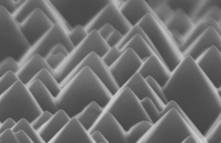

Level 1 - Aluminium screen-printing
The thickness of the screen-printed aluminium paste deposited onto the rear of the wafer is quite important. If the layer of aluminium is too thin, it is all consumed in the firing process as the aluminium and silicon form a molten region at the rear of the wafer when taken above 577°C. This alloyed region is not suitable as a rear metal contact either in terms of solderability or lateral conductivity. |
At the other extreme, if the aluminium layer is too thick, considerable wastage occurs while simultaneously risking inadequate drying of the aluminium paste prior to firing at high temperature or perhaps worse, failing to convert the full thickness of the paste layer into aluminium metal through driving out all the solvents and binders, etc. |
|
These layers are applied to both the top and underneath surfaces of the screen and may have thickness ranging from less than 1 micron up to in excess of 30 microns. Thicker coatings are usually achieved by the application of multiple layers of emulsion. This emulsion thickness will also impact the resulting thickness in the layer of aluminium deposited onto the wafer surface. Other factors affecting the thickness of the deposited aluminium layer include the pressure of the squeegee as it passes across the screen surface, the speed at which the squeegee travels and also the paste viscosity. |
A further decision when designing the screen relates to the type of pattern to be utilised. Some manufacturers choose to form a grid pattern on the rear of the wafer as shown. This is done usually to reduce material costs, although on occasions, grid patterns are used to allow bifacial operation whereby light is able to penetrate into the silicon wafer via the rear surface. |
| When the metal used is aluminium, the use of a grid pattern instead of a solid pattern for the rear metal is usually accompanied by some loss in performance. The magnitude of this loss depends on several factors including the thickness of the wafer, the wafer resistivity, the firing conditions for the aluminium paste, the amount of phosphorus that penetrates into the rear surface during the phosphorus emitter formation, etc. Most wafers have a lightly phosphorus diffused layer of silicon forming across the rear of the wafer, which is then destroyed during the firing of the aluminium paste. The aluminium paste easily penetrates to a greater depth than the phosphorus although when a grid pattern is used, the rear junction is only destroyed in the regions where the aluminium paste is deposited. Therefore, although the grid pattern allows good ohmic contact to be formed to the p-type substrate of the wafer, it leaves the surface as a whole with an extremely high surface recombination velocity due to the regions where the rear junction is not destroyed but rather periodically shunted. |
Level 2 - Aluminium screen-printing
If a grid pattern is being used on the rear of the wafer, the screen design is particularly important. If the stainless steel strands are too large in diameter relative to the density of the mesh, the holes become too small to force adequate quantities of paste through the screen onto the wafer surface. At the other extreme, however, if the strand diameter is too small, the pressure applied by the squeegee too easily damages the screens. In this regime, the squeegees stretch the stainless steel mesh beyond its elastic limit leading to a very poor lifetime for the screen. |
There is therefore an ideal mesh strand diameter that has adequate strength for long life expectancy for the screens while being small enough in diameter so that the gaps between the strands are at least as large as the strand diameters. It is of course possible to use a larger strand diameter and a corresponding lower mesh density to still achieve gaps between the strands that are at least as large as the strand diameters. However, lower mesh densities necessitate wider minimum resolutions in the lines that can be printed using the screen printing process. This is because it is in general unreliable to print metal lines that are much narrower than twice the spacing between the metal strands of the mesh. The meshes are usually also mounted at 45° to the squeegee direction to minimize the chance of fine breaks in the printed lines which are higher in probability when the strands run directly across the line being printed. |
The emulsion thickness is also of particular importance when a grid pattern is being used. The emulsion thickness does not need to be very great on the upper surface, although on the lower surface it is important that it be as thick as the layer of paste needing to be printed. The emulsion on the underneath side prevents the squeegee from pushing the stainless steel mesh closer than a certain distance to the silicon surface. Ideally, aluminium paste thicknesses of at least 20 microns are desired, therefore necessitating an emulsion thickness of the underneath side of the stainless steel mesh of similar dimensions. If this emulsion thickness is too great, it then becomes quite difficult to force the paste through the screen to reach the wafer surface unless either a very low paste viscosity is used or else extremely high squeegee pressure. None of these extremes are desirable. |
The squeegee pressure needs to be adequate to force the desired amount of paste through the screen. Additional pressure beyond this simply causes wear and tear to the screens and the squeegee surface. With regard to the squeegee speed, slow speeds reduce the throughput of the system, while too high a speed again prevents the squeegee from adequately forcing the paste through the stainless steel mesh. Often, the higher the squeegee speed, the higher the squeegee pressure needed to force a certain amount of paste through the mesh. |
|
|
|
|
This will severely shunt the cell and may do so for many cells as the conveyor belt or furnace belt repeatedly travel round and round. In this situation, yields will fall as the best cells will remain unaffected but with a certain percentage of the cells being badly affected electrically leading to resulting failures. These belts should therefore be inspected regularly, particularly if there is ever a wafer breakage or any form of mess created with the aluminium paste. Again, if the aluminium paste viscosity is too low, it is much easier to have residual quantities of aluminium paste being transferred onto these conveyor belts. Finally, many screen printers will require a wafer hold down to keep the wafer firmly in position during the printing process. This wafer hold down needs to be still active until the wafer is pushed from this location onto a transfer mechanism which may also have a wafer hold down. One trap that has been experienced by at least one manufacturer has been to have too high a pressure on this wafer hold down. |
|  |
|
In many of these screen printers, the transfer mechanism behind the main plate used to support the wafer during screen-printing is made of aluminium with only a thin Teflon coating. This Teflon coating is easily worn away with time even with a relatively mild wafer hold down pressure. This transfer mechanism should therefore also be regularly inspected for damage. Other screen printers may not have this type of problem, although care should always be exercised whenever the front surface of a textured silicon wafer is in contact with any metal surface. This is because the pyramid peaks are extremely sharp as shown and silicon is extremely hard. |